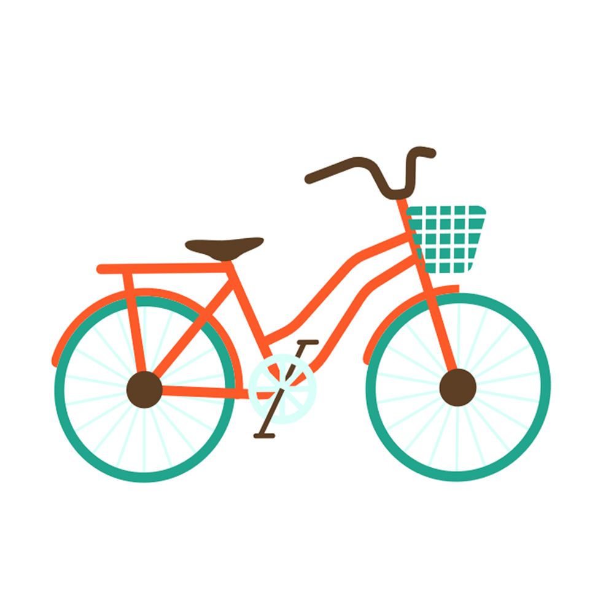
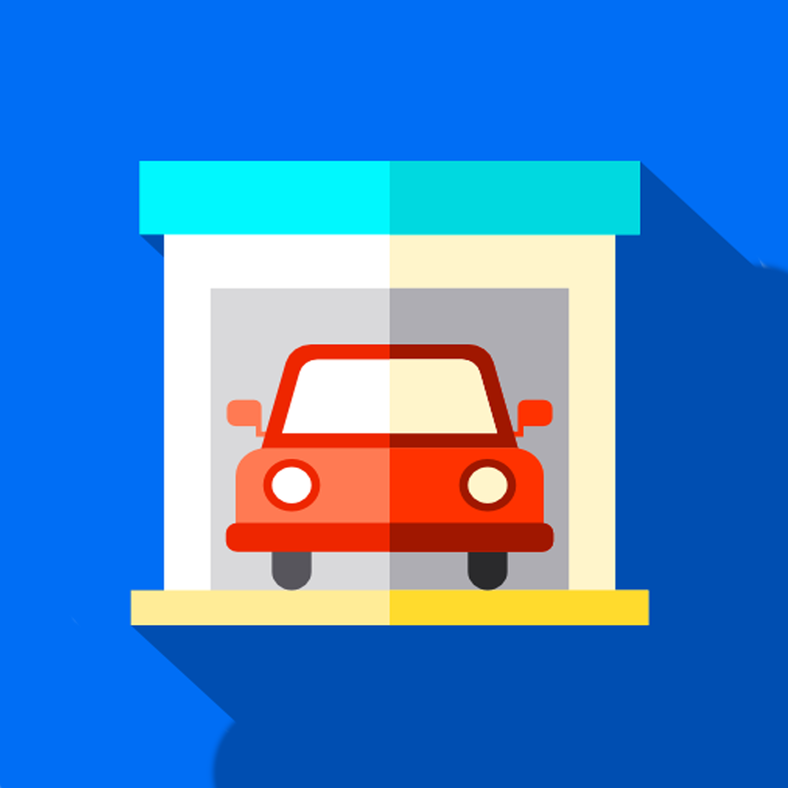
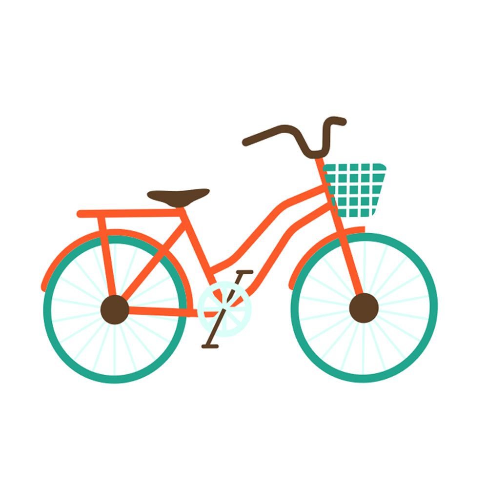
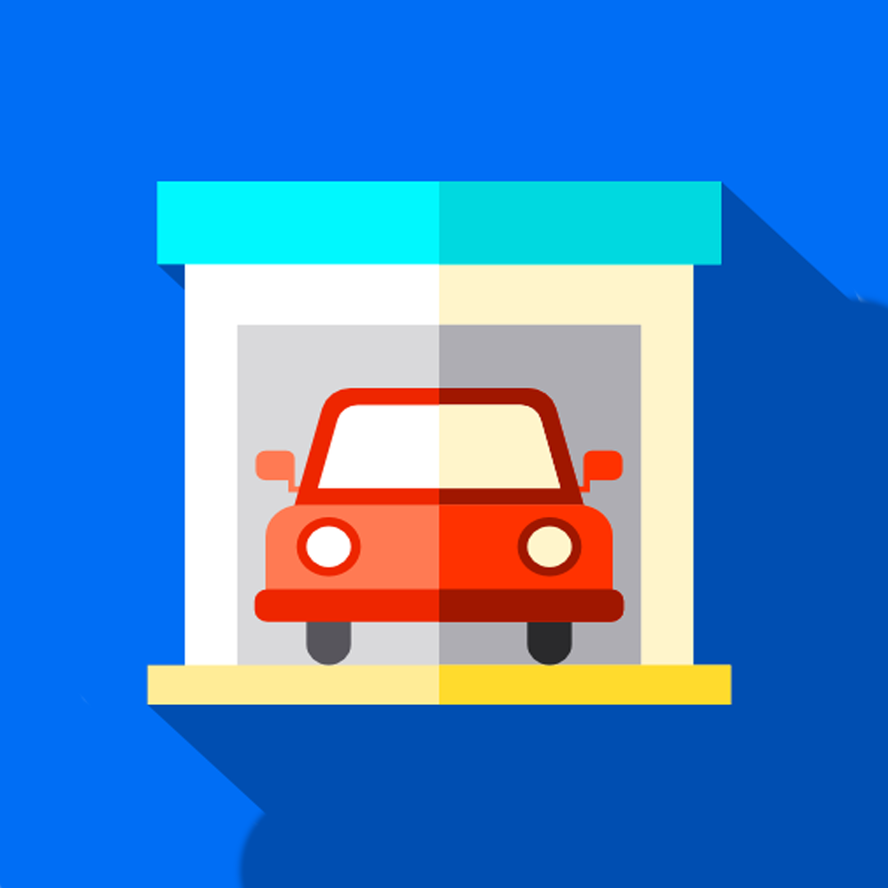

Wer sind wir?
Die Insterburg wird zusammen mit dem Hadiko, dem HFK und dem Kolleg am Ring vom Studentenwohnheim des Karlsruher Instituts für Technologie (KIT) e.V. getragen. Anders als die meisten anderen Wohnheime werden diese Häuser von Studenten selbstverwaltet.
Selbstverwaltung bedeutet, dass alle Aufgaben, für die sonst eine externe Verwaltung zuständig ist, von uns Studenten selbst übernommen werden. Dadurch haben wir die Möglichkeit, selbst aktiv das Leben in der Insterburg zu gestalten und zu organisieren.
Das geschieht durch die Haussprecher, die Flursprecher und die einzelnen Tutoriate.
Unsere Highlights
-

-
-

-

-
Bar
Was wäre ein gutes Wohnheim ohne seine eigene von den Bewohnern betriebene Bar? Schau bei unseren Parties vorbei und bereite dich auf unvergessliche Abende mit Billard, Tischkicker, Tischtennis, guter Musik und mehr vor! Für mehr Informationen über die Bar ließ bei den Tutorien weiter.
Instermat
Eine besondere Maschine in der Insterburg ist der Instermat. Dieser versorgt dich mit Schlüsseln für verschiedene Räume und Einrichtungen wie zum Beispiel dem Flügel, der Werkstatt und dem Kraftraum. Im Instermat gibt es auch nur für Tutoren zugängliche Schlüssel.
Fahrradkäfig
Wenn du in der Insterburg wohnst musst du dir keine Sorgen mehr machen, dass eines Tages dein Fahrrad weg ist. Wir bieten einen überdachten Fahrradkäfig an, in dem du dein Fahrrad abstellen kannst.
Parkplatz
Anders als viele Wohngelegenheiten bietet die Insterburg einen privaten Parkplatz an, dieser ist kostenfrei das ganze Jahr verfügbar und bietet auch deinem Fahrzeug eine feste Bleibe.
Miete
Die Miete in unserem Wohnheim ist bekannt als eine der gunstigsten in Karlsruhe!
-
- 
- 
Bar
Was wäre ein gutes Wohnheim ohne seine eigene von den Bewohnern betriebene Bar? Schau bei unseren Parties vorbei und bereite dich auf unvergessliche Abende mit Billard, Tischkicker, Tischtennis, guter Musik und mehr vor! Für mehr Informationen über die Bar ließ bei den Tutorien weiter.
Instermat
Eine besondere Maschine in der Insterburg ist der Instermat. Dieser versorgt dich mit Schlüsseln für verschiedene Räume und Einrichtungen wie zum Beispiel dem Flügel, der Werkstatt und dem Kraftraum. Im Instermat gibt es auch nur für Tutoren zugängliche Schlüssel.
Fahrradkäfig
Wenn du in der Insterburg wohnst musst du dir keine Sorgen mehr machen, dass eines Tages dein Fahrrad weg ist. Wir bieten einen überdachten Fahrradkäfig an, in dem du dein Fahrrad abstellen kannst.
Parkplatz
Anders als viele Wohngelegenheiten bietet die Insterburg einen privaten Parkplatz an, dieser ist kostenfrei das ganze Jahr verfügbar und bietet auch deinem Fahrzeug eine feste Bleibe.
Miete
Die Miete in unserem Wohnheim ist bekannt als eine der gunstigsten in Karlsruhe!
Die Wohnmöglichkeiten & Kosten
Unser Wohnheim hat 12 Stockwerke.
Auf jedem Stock bzw. Flur gibt es eine Küche, ein Badezimmer mit Dusche und zwei Toiletten. Ausserdem hat jeder Flur noch einen kleinen Balkon.
Pro Flur gibt es insgesamt 12 Zimmer: 10 davon mit 9m2 und 2 mit 16m2 oder 14m2 Wohnfläche.
Eines der Zimmer auf dem 1. Flur wird als Gästezimmer genutzt, ein weiteres dient den Haussprechern als Büro. Auf dem 7. Flur gibt es ein Lernzimmer. Außerdem ist auf jedem Flur ein Zimmer für IStO-Studierende reserviert. Also stehen insgesamt etwa 140 Zimmer zur Verfügung. Die Mietkosten für diese
Zimmer könnt Ihr der Tabelle entnehmen.
Im Normalfall bekommen neue Bewohner ein normales 9m2 Zimmer bis eins der großen frei wird und dann der gesamte Flur zusammen darüber entscheidet, wem nun das große Zimmer zusteht.
| Wohnfläche | Kaltmiete (monatlich) |
Nebenkosten (monatlich) |
Vereinsbeitrag (monatlich) |
Gesamt (monatlich) |
Kaution (einmalig) |
|---|---|---|---|---|---|
| 9m2 | 125€ | 99€ | 9€ | 233€ | 500€ |
| 14m2 | 165€ | 99€ | 9€ | 273€ | 500€ |
| 16m2 | 180€ | 99€ | 9€ | 288€ | 500€ |
Zimmerausstattung
Die standardmäßige Ausstattung der Zimmer besteht aus:
- Bett 90cm x 200cm (Bettkissen, Decke und Matraze inklusive)
- Schreibtisch
- Rollcontainer
- Schreibtischstuhl
- großer Einbauschrank
- High-Speed Internetzugang via LAN und WiFi
Wie sieht es mit dem Internet aus?
Zusätzlich zu dem im ganzen Haus verfügbaren WLAN, verfügt jedes Zimmer über ein LAN-Anschluss. Dieser erreicht dank modernen Glasfaser Geschwindigkeiten von 800Mb/s.
Private Hotspots sind wegen des internen Netzes nicht erlaubt.
Wie bekomme ich meinen Vertrag?
Alle Verträge der Insterburg sind grundsätzlich immer befristet. Eine Verlängerung ist nur mit Zustimmung aller Flurmitglieder möglich.
Meist lernst du deinen Flur in einem Bewerbungsgespräch kennen.
Falls dieser sich für dich entscheidet, wird dein erster Vertrag für einen Zeitraum von sechs Monaten gelten.
Danach bekommst du einen neuen Vertrag der für 12 Monate gilt.
Was macht uns so besonders?
Selbstverwaltung
Die Insterburg ist ein selbstverwaltetes Studentenwohnheim in Karlsruhe. Selbstverwaltet bedeutet, dass die Studenten die organisatorischen Aufgaben wie zum Beispiel die Vergabe von Zimmern selbst übernehmen. Die übergeordnete Verwaltung obliegt dem Studentenwohnheim Karlsruhe e.V. Über alle internen Angelegenheiten wird jedoch selbstständig entschieden.
Dies geschieht durch die Wahl von Haussprechern, Flursprechern und Tutoren für spezielle Aufgaben (siehe Tutoren Seite) sowie die Organisation von diversen Hausfesten. Die Selbstverwaltung führt dazu, dass es bei uns einige Angebote gibt, die man in Studentenwohnheimen normalerweise nicht findet.
Da wir über eigene finanzielle Mittel verfügen, kann die Hausvollversammlung, die einmal im Semester zusammentritt unbürokratisch über Anschaffungen entscheiden.
Tutorien
Damit sich jeder im Wohnheim einbringen kann, haben wir sogenannte Tutorien ins Leben gerufen. Tutorien bestehen aus den Leuten, die sich freiwillig bereit erklären sich in einem Bereich des Wohnheims zu engagieren beispielsweise das Bar-, Homepage-, Netzwerk- und Werkstatttutoriat. Auf der Tutorien-Seite kann man sich einen detaillierten Überblick verschaffen, sowie die jeweiligen Tutorien kontaktieren und, bei Interesse, beitreten.
Studium
Man zieht i.d.R. nicht nur wegen der Unterhaltungsmöglichkeiten in ein Studentenwohnheim, sondern hauptsächlich, weil es ein passender Wohnort für das Studium ist. Das Lernzimmer bietet alles was ihr braucht wie ein Whiteboard, einen Drucker und schnelles Internet. Außerdem liegt die KIT-Bibliothek mit dem Fahrrad nur circa 13 Minuten entfernt von der Insterburg, mit dem Bus dauert es ca. 5 Minuten. Diese ist rund um die Uhr offen. (KIT-Bibliothek).
Sport
Die Insterburg liegt im Wald, perfekt für Spaziergange oder zum Joggen, doch das ist nicht alles. Wir bieten nicht nur unseren eigenen Yogakurs, der Instermat versorgt dich auch noch mit freiem Eintritt in die DAV Kletterhalle (8 Minuten mit dem Fahrrad). Wenn du ein Freund von Fitness Studios bist, kannst du unseren Kraftraum verwenden, dieser befindet sich in unserem Schwesterwohnheim HFK (500m) und ist 24/7 benutzbar. Außerdem besitzen wir einen schönen Garten, in dem oft Spiele organisiert werden.
Internationalität
Die Insterburg ist ein sehr internationales Wohnheim. In unserem Wohnheim wohnen circa 30 Nationalitäten zusammen. Wenn du also andere Kulturen kennenlernen willst komm zu uns und stell dich vor!